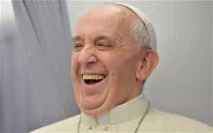

Michael is the author of Staying Married in a Degenerate Age. Follow him on Twitter or Facebook. You can read more of his writing at Honor and Daring.


Traditional men should be concerned with what goes on in the large Christian churches, even if they don’t happen to be Christian. That’s because the churches affect the moral temperature of the country. If the churches are strong and uncompromising, it is a good bet that the society is strong and healthy as well. If the churches are weak and willing to change their teachings to fit the culture, you can be assured that morality in that society is declining. Immoral societies are not good places to find a wife or to raise a family so it is in our best interest to have strong religious institutions.
If you look at Christianity in the US, the prognosis is bleak. The two largest groups that have held strong Christian convictions are the Evangelicals and the Catholic Church. Both groups have been bulwarks of traditional morality… until recently. As the same sex marriage movement gained momentum, individual evangelical churches started to cave on gay marriage and now there are signs that some evangelical groups will begin accepting transgenderism as something that is okay. The Catholic Church stood strong on these issues, but with the election of Pope Francis that unyielding stand may be coming to an end.

When Jorge Bergoglio was chosen to be the pope by the papal conclave in 2013, the media—and some Catholic bishops—fell all over themselves trying to paint Francis as a Christ-like figure. He was portrayed as person who genuinely did not want wealth but only a simple, faith-filled life. While he was a bishop in Argentina, he frequently cooked his own meals and used public transportation—both unusual qualities for a high ranking bishop. Even Bergoglio’s choice of his papal name, Francis, was meant to evoke St. Francis of Assisi, a saint who was known for his love of simplicity and poverty.
Francis’ initial acts as pope served to confirm his reputation as merciful pastor who sided with the poor. Instead of moving into the papal apartment of the Apostolic Palace, Francis chose to stay in the same suite he was in as a cardinal during the conclave. On one occasion, he was scheduled to attend a Beethoven concert but he neglected to show up saying that he was not “a Renaissance prince who listens to music.” And, most notoriously, he changed the traditional washing of the feet ritual.
Instead of washing the feet of twelve priests, as the ritual requires, Francis chose to wash the feet of prisoners, including Muslims and other nonbelievers. Beyond that Francis made an unprecedented addition to the ritual: he not only washed the prisoners’ feet, he also kissed them. Defenders of Francis viewed it as a display of Francis’ great humility, but critics saw it as a shameless act of attention-getting.
While Francis’ actions broke with the tradition of popes before him, they were not really problematic because they did not concern the teaching of Christian doctrine. The bigger problem has been the confusion he has sown within the ranks of faithful Catholics. The first of these came up when he was informally asked about gay Catholics. Francis responded, “If someone is gay and he searches for the Lord and has good will, who am I to judge?” Francis’ response is not technically wrong, but it is incomplete as it neglects to mention that in Catholic teaching a homosexual orientation is considered intrinsically disordered. Also, the “who am I to judge” line seemed to give papal approval minimizing homosexuality as a sin. After all, Francis did not take a “who am I to judge” line with Donald Trump when he said anyone who would build a border wall is “not a Christian.”
Gays are not the only group that Francis seems to be fond of. He has also praised Muslims, atheists, and Communists. The only group that Francis doesn’t seem to like are Catholics. He stated that observant Catholics are particularly susceptible of following a “self-absorbed Promethean neo-Pelagianism.” And he accused devout young Catholics who like to attend the Latin Mass of being “rigid.” Virtually every Catholic I’ve talked to feels that Francis doesn’t really like Catholics, and the feeling is mutual.

Cardinal Caffarra, who is one of the four cardinals who have respectfully asked Francis to clarify exactly what he means.
So far, everything I’ve described has been annoying to Catholics, but not ground shaking. The Catholic Church has survived several bad popes in the past. But with the publication of the Apostolic Exhortation Amoris Laetitia (On Love in the Family), Pope Francis has put forth a teaching that threatens to destroy the Catholic Church from within. In an ambiguous footnote in the Exhortation, Francis seems to say that Catholics who are divorced and remarried may in certain circumstances receive the sacraments of the Church. At first glance, that implication might appear to be inconsequential, but it strikes at the heart of one of the foundational doctrines of the Catholic Church—the indissolubility of marriage.
Catholics believe that once you are validly married, you are married “until death do us part” as the traditional vows state. The doctrine directly from Jesus’ own words:
The Pharisees also came to Him, testing Him, and saying to Him, “Is it lawful for a man to divorce his wife for just any reason?”
And He answered and said to them, “Have you not read that He who made[a] them at the beginning ‘made them male and female,’ and said, ‘For this reason a man shall leave his father and mother and be joined to his wife, and the two shall become one flesh’? So then, they are no longer two but one flesh. Therefore what God has joined together, let not man separate.”
Jesus replied, “Moses permitted you to divorce your wives because your hearts were hard. But it was not this way from the beginning. I tell you that anyone who divorces his wife, except for sexual immorality, and marries another woman commits adultery.”
The Catholic Church has steadfastly held to this difficult teaching for 2,000 years. Saints have gone to their martyrdom defending the doctrine so it is not a doctrine that Catholics take lightly. But in Amoris Laetitia, Francis appears to contradict the teaching of Jesus on marriage.
If that is not bad enough, at certain points Francis sounds more like a social justice warrior influenced by the Frankfurt School than a Catholic pope::
I certainly value feminism, but one that does not demand uniformity or negate motherhood.
If certain forms of feminism have arisen which we must consider inadequate, we must nonetheless see in the women’s movement the working of the Spirit for a clearer recognition of the dignity and rights of women.
History is burdened by the excesses of patriarchal cultures that considered women inferior….
These statements may sound innocuous to the average person, but longtime readers of Return Of Kings will immediately recognize that the Pope is introducing a false egalitarianism into Christianity.
Four respected Catholic cardinals have asked Pope Francis privately to clarify what he meant by the ambiguous footnote. This is a pretty standard practice. After all, the whole purpose of the office of the Pope is to provide clear teaching. Yet Pope Francis neglected to respond to the cardinals’ questions so the cardinals made their questions public. Even that did not force Francis to clarify. Instead, allies of Pope Francis have attacked the four cardinals as disobedient heretics for calling into question the Pope’s teaching.

No one knows exactly where this will go from here because there has never been a historical situation like this. The Catholic Church is in uncharted waters. If Francis remains silent, the crisis may be averted because the Church’s traditional teaching trumps any ambiguous statements that Francis makes.
The other possible case is that Francis will double down and explicitly contradict the teaching of Christ. At that point, Francis would be a heretic. It would almost certainly result in a schism within the Catholic Church, if not complete destruction of the institution.
As a Catholic, I owe the Pope a high degree of respect. It is also my responsibility to interpret the Francis’ words and actions in the best possible light. But my fidelity is not to the person of Pope Francis, but to the teaching of all the popes who have proceeded him. Insofar as Pope Francis’ teachings agree with those of his predecessors, I am bound to be obedient. However, if Francis departs from the teaching of Christ, I am under no obligation to excuse his error. Rather, the charitable action would be to warn others about the error.
Of course, my non-Catholic readers have no such obligation. But all of us have to live in the culture that is created by our society’s major institutions. In a world where corporations, education, the news media, and entertainment media are firmly under leftist control, we need the churches to be staunch defenders of traditional morality. Whenever a Christian church compromises with the degenerate culture, traditional men and women lose another battle. When a Christian institution the size of the Catholic Church compromises, it is a sign that we have lost the war.
Read More: Cardinal Raymond Leo Burke Rebukes Feminization Of Catholic Church